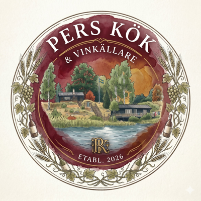

🍷 Vinkällaren
← Startsidan
0
flaskor
0
viner
—
äldsta årgång
0
länder
💰 Visa källarens värde
🤖 Uppskatta pris för viner utan pris
✕ Avbryt
Alla
Rött
Vitt
Mousse.
Rosé
Sött
Alla länder
☰ Lista
🏠 Källarvy
📚 Arkiv
↓ Säkerhetskopia
↑ Importera
Senast druckna
Bäst betyg
Namn A–Ö
Årgång
＋
Lägg till vin
✕
📷 Fota framsida
📷 Baksida (valfri)
🔍 Analysera
Namn *
Typ
Rött
Vitt
Mousserande
Rosé
Sött
Druva
Land
Region
Årgång
Antal flaskor
Plats
Välj plats
Hylla
Välj hylla
Drick från (år)
Drick till (år)
Pris (kr/flaska)
Anteckningar
Historik
Ta bort
Avbryt
Spara
🍾 Sista flaskan!
✕
Sista flaskan av
–
spara i Vinarkivet?
⭐ Spara med betyg
📚 Bara arkivera
✕ Nej tack
Betyg (valfritt)
★
★
★
★
★
Anteckning (valfri)
← Tillbaka
Spara i arkivet